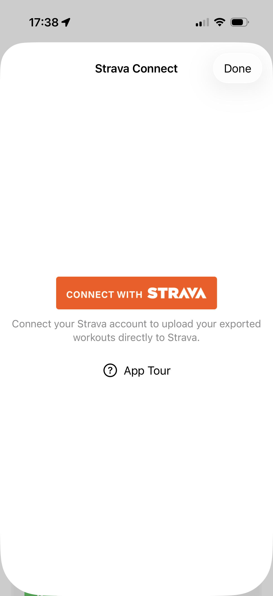
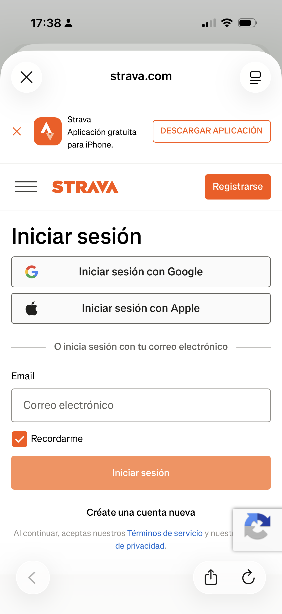
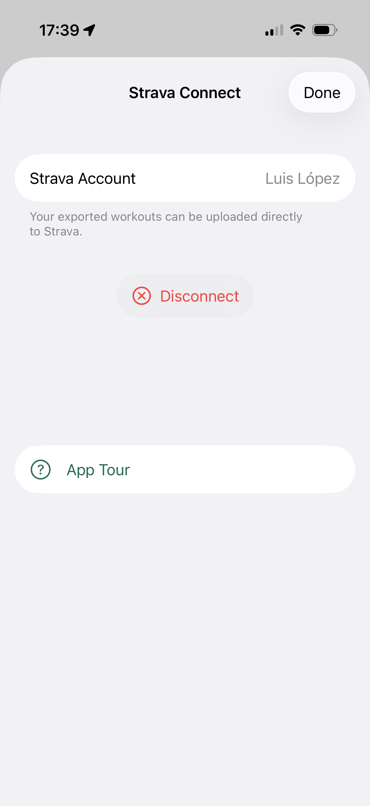
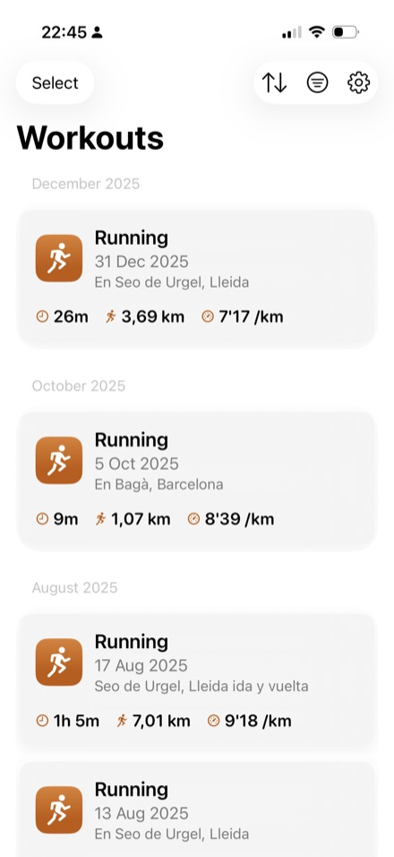
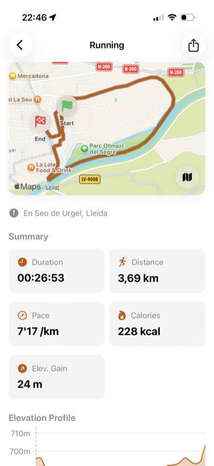
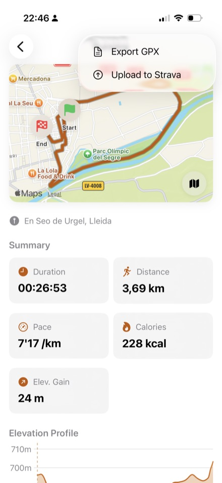

Export Apple Watch and iPhone workouts to GPX with one tap. Upload to Strava instantly.
Convert any Apple Health workout with GPS data to standard GPX format. Works with running, cycling, hiking, and more.
Connect your Strava account via OAuth and upload workouts directly. No file juggling needed.
Combine multiple workout routes into a single GPX file. Perfect for multi-day hikes or split sessions.
Triathlons, duathlons, and multisport workouts from Apple Watch are split into separate activities for individual export or upload.
See your workout route on a map with elevation profile before exporting. Verify it's the right one.
Export multiple workouts at once as a ZIP archive. Select a date range and download them all in one tap.
Available in English, Spanish, French, German, Italian, Portuguese, Dutch, Polish, Turkish, Japanese, and Chinese.
All data stays on your device. No servers, no tracking, no account required. Your workouts are yours.
Upload your Apple Health workouts directly to Strava. Connect once, then upload any workout with a single tap. No files to manage, no middleman.

Tap "Connect with Strava" using the official OAuth flow

Sign in to your Strava account securely on strava.com
Review permissions and authorize SnapGPX to upload activities

Your account is connected. Upload workouts anytime with one tap
activity:write scope
Grant access to Apple Health and your workouts appear instantly.

See the route on a map, elevation profile, and all your stats at a glance.

Download the GPX file, share it, or upload directly to Strava.
SnapGPX reads workouts from Apple Health locally. No data is sent to any server unless you explicitly choose to upload to Strava.
No backend servers. No analytics. No tracking. OAuth tokens stored only in your device's Keychain. Read our full privacy policy.